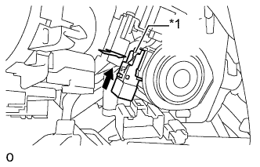
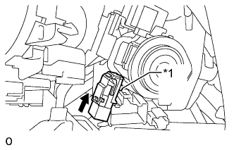
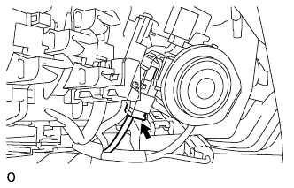

ВЫКЛЮЧАТЕЛЬ РАЗБЛОКИРОВКИ КЛЮЧА > УСТАНОВКА |
| 1. УСТАНОВИТЕ ВЫКЛЮЧАТЕЛЬ РАЗБЛОКИРОВКИ КЛЮЧА В СБОРЕ |
В случае повторного использования датчика предупреждения о разблокировке:
|  |
Установите датчик предупреждения о разблокировке.
| *1 | Колпачок штыря |
 | Сдвиньте |
Установите колпачок штыря.
 |
Подсоедините разъем датчика предупреждения о разблокировке.
Введите в зацепление 3 захвата, чтобы закрепить обивку.
|  |
В случае замены датчика предупреждения о разблокировке:
| *1 | Штырь |
| Сдвиньте |
Нажимая на штырь, протолкните датчик, чтобы его установить.
|  |
Подсоедините разъем датчика предупреждения о разблокировке.
| 2. УСТАНОВИТЕ ПЕРЕКЛЮЧАТЕЛЬ СТЕКЛООЧИСТИТЕЛЯ ВЕТРОВОГО СТЕКЛА В СБОРЕ |
Введите захват в зацепление и установите переключатель стеклоочистителя ветрового стекла в сборе.
Для моделей с датчиком дождя:
Подсоедините разъем.
Для моделей без датчика дождя:
Подсоедините 2 разъема.
| 3. УСТАНОВИТЕ ВЕРХНИЙ КОЖУХ РУЛЕВОЙ КОЛОНКИ |
Для моделей с наклонной телескопической рулевой колонкой с ручным приводом:
Установите верхний кожух рулевой колонки (Нажмите здесь).
Для моделей с наклонной телескопической рулевой колонкой с электроприводом:
Установите верхний кожух рулевой колонки (Нажмите здесь).
| 4. УСТАНОВИТЕ НИЖНИЙ КОЖУХ РУЛЕВОЙ КОЛОНКИ |
Для моделей с наклонной телескопической рулевой колонкой с ручным приводом:
Установите нижний кожух рулевой колонки (Нажмите здесь).
Для моделей с наклонной телескопической рулевой колонкой с электроприводом:
Установите нижний кожух рулевой колонки (Нажмите здесь).